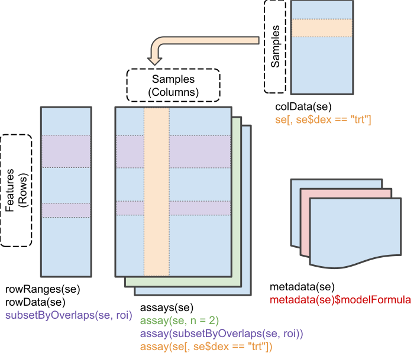
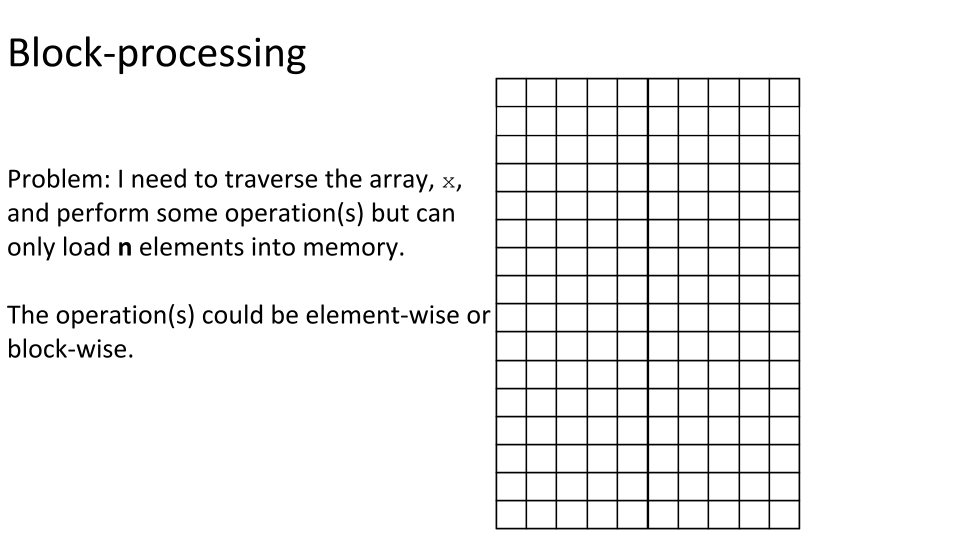
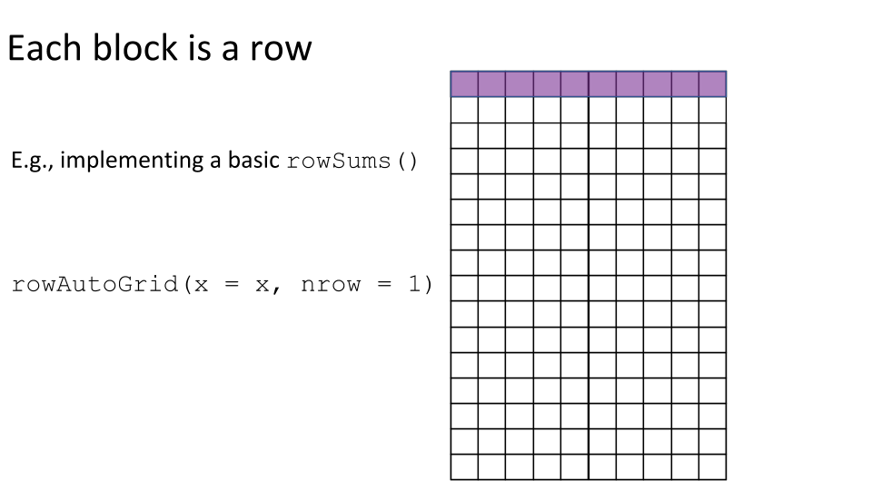
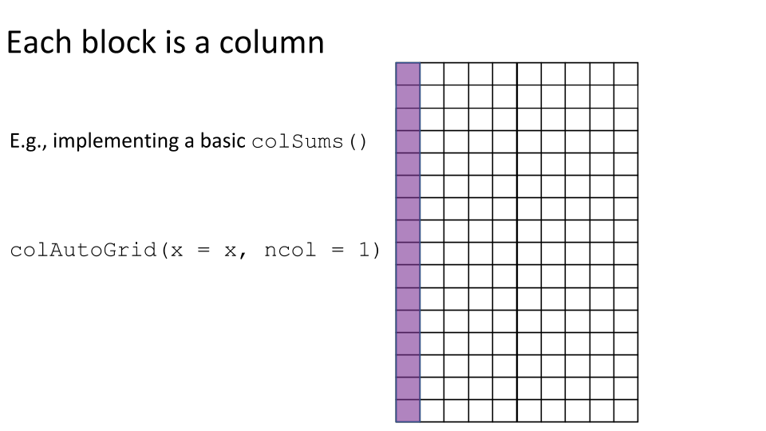
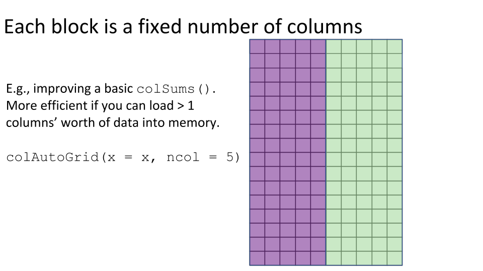
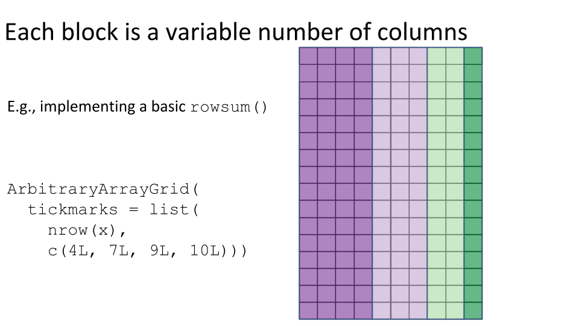
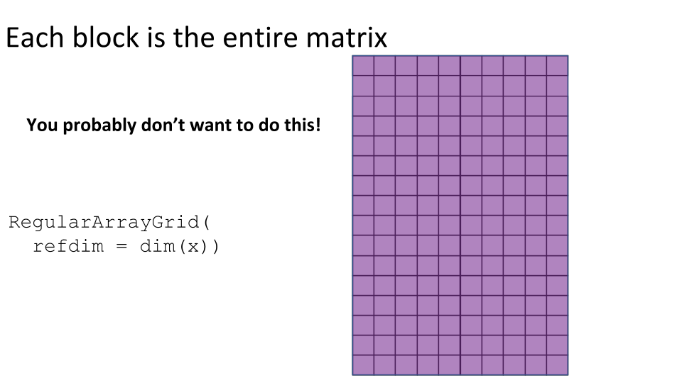
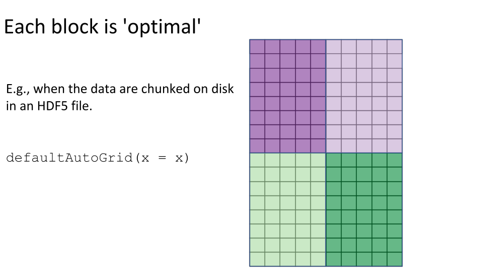

Effectively_using_the_DelayedArray_framework_for_users.RmdThis workshop gives an introductory overview of the DelayedArray framework, which can be used by R / Bioconductor packages to support the analysis of large array-like datasets. A DelayedArray is like an ordinary array in R, but allows for the data to be in-memory, on-disk in a file, or even hosted on a remote server.
Workshop participants will learn where they might encounter a DelayedArray in the wild while using Bioconductor and understand the fundamental concepts underlying the DelayedArray framework. This workshop will feature introductory material, ‘live’ coding, and Q&A, all of which are adapted from the content below.
colSums() and colMeans().Students will be able to run code examples from the workshop material. There will be a Q&A session in the second half of the workshop.
These packages are the focus of this workshop:
Please see the workshop DESCRIPTION for a full list of dependencies.
| Activity | Time |
|---|---|
| Introductory material | 5 min |
| First contact | 20 min |
| Workflow tips for DelayedArray-backed analyses | 15 min |
| Q&A | 15 min |
Data from a high-throughput biological assay, such as single-cell RNA-sequencing (scRNA-seq), will often be summarised as a matrix of counts, where rows correspond to features and columns to samples1. Within Bioconductor, the SummarizedExperiment class is the recommended container for such data, offering a rich interface that tightly links assay measurements to data on the features and the samples.
The SummarizedExperiment class is used to store rectangular arrays of experimental results (assays). Here, each assay is drawn as a matrix but higher-dimensional arrays are also supported.

Traditionally, the assay data are stored in-memory as an ordinary array object2. Storing the data in-memory becomes a real pain with the ever-growing size of ’omics datasets. It is now not uncommon to collect \(10,000-100,000,000\) measurements on \(100 - 1,000,000\) samples, which would occupy \(10-1,000\) gigabytes (Gb) if stored in-memory as ordinary R arrays.
The DelayedArray framework offers a solution to this problem. By wrapping an array-like object (typically an on-disk object) in a DelayedArray object, it allows one to perform common array operations on the data without loading the object in memory. In order to reduce memory usage and optimize performance, operations on the object are either delayed or executed using a block processing mechanism.
The DelayedArray framework enables the analysis of datasets that are too large to be stored or processed in-memory. This has become particularly relevant with the advent of large single-cell RNA-sequencing (scRNA-seq) studies containing tens of thousands to millions of cells.
In my own research I have made extensive use of the DelayedArray framework when analysing whole genome bisulfite sequencing (WGBS) datasets. To give a recent example, we profiled 45 human brain samples using WGBS to measure DNA methylation (Rizzardi et al. 2019). For most tissues, we focus on so-called so-called CpG methylation, which requires analysing matrices with roughly 20 million rows (CpG loci) and 45 columns (samples). This sized data is challenging, but well within the realms of high performance computing available at a modern research institute. However, the brain also has extensive non-CpG methylation and there are an order of magnitude more non-CpG loci than CpG loci. This necessitated extensive re-factoring of our software tools and we successfully adopted the DelayedArray framework to enable this research.
The DelayedArray framework is (unsurprisingly) implemented in the DelayedArray package. However, there are several other key packages that are an important part of the broader ‘ecosystem’. More importantly, as a user of Bioconductor software, it is increasingly likely that you will encounter DelayedArray objects during a data analysis, especially if you are analysing single-cell data3. The following table lists packages that depend upon the DelayedArray package.
dep_tbl <- BiocPkgTools::buildPkgDependencyDataFrame() da_dep_tbl <- dep_tbl[dep_tbl$dependency == "DelayedArray", c("Package", "edgetype")] da_dep_tbl <- da_dep_tbl[with(da_dep_tbl, order(edgetype, Package)), ] colnames(da_dep_tbl) <- c("Package", "Dependency Type") DT::datatable(da_dep_tbl)
Well, duh. Implements the DelayedArray and RleArray classes, along with all the fundamentals the enable the delayed operations, block processing, and realization that underpin the DelayedArray framework.
Implements the HDF5Array and TENxMatrix classes, two convenient and memory-efficient array-like containers for on-disk representation of HDF5 datasets. HDF5Array is for datasets that use the conventional (i.e. dense) HDF5 representation. TENxMatrix is for datasets that use the sparse matrix HDF5 representation produced by 10x Genomics CellRanger software.
Implements a DelayedArray backend for TileDB to read, write and store dense and sparse arrays. The resulting TileDBArray objects are directly compatible with any Bioconductor package that accepts DelayedArray objects, serving as a swap-in replacement for the predominant HDF5Array that is currently used throughout the Bioconductor ecosystem for representing large datasets.
NB: TileDBArray is not yet available from Bioconductor.
A port of the matrixStats API for use with DelayedMatrix objects. High-performing functions operating on rows and columns of DelayedMatrix objects, e.g. col / rowMedians(), col / rowRanks(), and col / rowSds(). Functions optimized per data type and for subsetted calculations such that both memory usage and processing time is minimized.
Disclaimer: I develop this package.
Implements exact and approximate methods for singular value decomposition and principal components analysis using a framework that allows them to be easily switched within Bioconductor packages or workflows. These methods work on DelayedMatrix objects as well as ordinary matrix objects and some sparse matrix objects from the Matrix package.
BiocSingular defines a few interesting specialized DelayedMatrix subclasses that aim to preserve sparsity of the original matrix:
Implements the VCFArray and GDSArray classes, types of DelayedArray, to represent VCF files and GDS-files in an array-like representation. VCF and GDS files are widely used to represent genotyping or sequence data.
Provide functions and classes to interface with remote data stores by operating on SummarizedExperiment-like objects. These data are HDF5 files living on a remote server running h5serv, a REST-based service for HDF5 data.
These are the packages that as a user you might directly load/attach with library() as part of a data analysis. Alternatively, these may be loaded/attached as a dependency4 of another package you load/attach as part of an analysis.
Provides a number of utility functions for handling single-cell (RNA-seq) data from droplet technologies such as 10X Genomics. This includes DropletUtils::read10xCounts() for data loading from the count matrices produced by 10x Genomics’ CellRanger software, which may be stored in an HDF5 file. To do this, it makes use of the TENxMatrix class.
Provides a means to convert from ‘loom’ files to standard Bioconductor classes and back again. The Loom file format uses HDF5 to store experimental data and is used by some tools and labs producing data using single-cell assays. This includes the LoomExperiment::import() function for data loading from loom files into an HDF5Matrix.
Provides basic utility functions for performing single-cell analyses, focusing on simple normalization, quality control and data transformations. Also provides some helper functions to assist development of other packages. These methods work on DelayedMatrix objects as well as ordinary matrix objects and some sparse matrix objects from the Matrix package.
Implements a variety of methods for batch correction of single-cell (RNA sequencing) data, such as multiBatchPCA() and fastMNN(). These methods work on DelayedMatrix objects as well as ordinary matrix objects and some sparse matrix objects from the Matrix package.
A collection of tools for analyzing and visualizing bisulfite sequencing data. This was one of the first packages to make use of the DelayedArray framework and it supports these throughout the package. This was needed in order to store and analyse large non-CpG methylation datasets (> 300 million loci, hundreds of samples) using HDF5 files.
Disclaimer: I develop bsseq and learnt a lot whilst updating it to support the DelayedArray framework.
Tools to analyze & visualize Illumina Infinium methylation arrays. This doesn’t have the same level of support for DelayedMatrix objects as bsseq, but perhaps one day. This is needed in order to store and analyse large methylation datasets (> 850,000 loci, tens of thousands of) using HDF5 files.
Disclaimer: This was the second package, after bsseq, I started to re-write to support the DelayedArray framework. Here, it is rather more difficult because it is a ‘widely’ used package and has code from lots of different authors with different coding styles.
Provides a consistent C++ class interface for reading from and writing data to a variety of commonly used matrix types. Ordinary matrices and several sparse/dense Matrix classes are directly supported, third-party S4 classes may be supported by external linkage (such as the HDF5Matrix class), while all other matrices are handled by DelayedArray block processing.
The heart of the DelayedArray framework is implemented in the DelayedArray package, which we now load and attach.
library(DelayedArray) #> Loading required package: stats4 #> Loading required package: Matrix #> Loading required package: matrixStats #> Loading required package: BiocGenerics #> Loading required package: parallel #> #> Attaching package: 'BiocGenerics' #> The following objects are masked from 'package:parallel': #> #> clusterApply, clusterApplyLB, clusterCall, clusterEvalQ, #> clusterExport, clusterMap, parApply, parCapply, parLapply, #> parLapplyLB, parRapply, parSapply, parSapplyLB #> The following objects are masked from 'package:stats': #> #> IQR, mad, sd, var, xtabs #> The following objects are masked from 'package:base': #> #> anyDuplicated, append, as.data.frame, basename, cbind, colnames, #> dirname, do.call, duplicated, eval, evalq, Filter, Find, get, grep, #> grepl, intersect, is.unsorted, lapply, Map, mapply, match, mget, #> order, paste, pmax, pmax.int, pmin, pmin.int, Position, rank, #> rbind, Reduce, rownames, sapply, setdiff, sort, table, tapply, #> union, unique, unsplit, which.max, which.min #> Loading required package: S4Vectors #> #> Attaching package: 'S4Vectors' #> The following object is masked from 'package:Matrix': #> #> expand #> The following object is masked from 'package:base': #> #> expand.grid #> Loading required package: IRanges #> #> Attaching package: 'DelayedArray' #> The following objects are masked from 'package:matrixStats': #> #> colMaxs, colMins, colRanges, rowMaxs, rowMins, rowRanges #> The following objects are masked from 'package:base': #> #> aperm, apply, rowsum
We’ll also load and attach the HDF5Array package, which extends the DelayedArray framework to support on-disk HDF5 files.
library(HDF5Array) #> Loading required package: rhdf5
We will begin with an example using some scRNA-seq data on 1.3 million brain cells from embryonic mice, generated by 10X Genomics. This dataset is available from ExperimentHub5.
library(ExperimentHub) #> Loading required package: AnnotationHub #> Loading required package: BiocFileCache #> Loading required package: dbplyr hub <- ExperimentHub() #> using temporary cache /tmp/RtmpKEoKbE/BiocFileCache #> snapshotDate(): 2020-07-10 # Query ExperimentHub to find the relevant resource. # This dataset is available in two formats: a 'dense matrix' format and a # 'HDF5-based 10X Genomics' format. We'll use the 'dense matrix' version for # this workshop. query(hub, "TENxBrainData") #> ExperimentHub with 8 records #> # snapshotDate(): 2020-07-10 #> # $dataprovider: 10X Genomics #> # $species: Mus musculus #> # $rdataclass: character #> # additional mcols(): taxonomyid, genome, description, #> # coordinate_1_based, maintainer, rdatadateadded, preparerclass, tags, #> # rdatapath, sourceurl, sourcetype #> # retrieve records with, e.g., 'object[["EH1039"]]' #> #> title #> EH1039 | Brain scRNA-seq data, 'HDF5-based 10X Genomics' format #> EH1040 | Brain scRNA-seq data, 'dense matrix' format #> EH1041 | Brain scRNA-seq data, sample (column) annotation #> EH1042 | Brain scRNA-seq data, gene (row) annotation #> EH1689 | Brain scRNA-seq data 20k subset, 'HDF5-based 10x Genomics' format #> EH1690 | Brain scRNA-seq data 20k subset, 'dense matrix' format #> EH1691 | Brain scRNA-seq data 20k subset, sample (column) annotation #> EH1692 | Brain scRNA-seq data 20k subset, gene (row) annotation # Load the relevant resource. # This will download the data and may take a little while on the first run. # The result will be cached, however, so subsequent runs avoid re-downloading # the data. fname <- hub[["EH1040"]] #> Bioconductor version 3.12 (BiocManager 1.30.10), R 4.0.0 (2020-04-24) #> Installing package(s) 'TENxBrainData' #> Old packages: 'boot', 'class', 'foreign', 'KernSmooth', 'MASS', 'nlme', 'nnet', #> 'spatial' #> see ?TENxBrainData and browseVignettes('TENxBrainData') for documentation #> downloading 1 resources #> retrieving 1 resource #> loading from cache # The structure of this HDF5 file can be seen using the h5ls() command # from the rhdf5 package: rhdf5::h5ls(fname) #> group name otype dclass dim #> 0 / counts H5I_DATASET INTEGER 27998 x 1306127 # The 1.3 Million Brain Cell Dataset is represented by the "counts" group. # We point the HDF5Array() constructor to this group to create a HDF5Matrix # object (a type of DelayedArray) representing the dataset: tenx <- HDF5Array(filepath = fname, name = "counts")
The data contain counts on nearly 28,000 gene for more than 1.3 million cells.
dim(tenx) #> [1] 27998 1306127
This is roughly 100,000-times more samples than a typical bulk RNA-seq dataset and would require over 140 GB of RAM to hold as a matrix and around 30 GB as a sparse matrix.
With so much data, we might expect that it would feel sluggish to interact with this object, but this is not the case. For example, let’s do something that would ordinarily be a terrible idea (and something that’s frustrated me way too many times): let’s ‘accidentally’ print out the entire counts matrix.
tenx #> <27998 x 1306127> matrix of class HDF5Matrix and type "integer": #> [,1] [,2] [,3] [,4] ... [,1306124] [,1306125] #> [1,] 0 0 0 0 . 0 0 #> [2,] 0 0 0 0 . 0 0 #> [3,] 0 0 0 0 . 0 0 #> [4,] 0 0 0 0 . 0 0 #> [5,] 0 0 0 0 . 0 0 #> ... . . . . . . . #> [27994,] 0 0 0 0 . 0 0 #> [27995,] 1 0 0 2 . 0 1 #> [27996,] 0 0 0 0 . 0 0 #> [27997,] 0 0 0 0 . 0 0 #> [27998,] 0 0 0 0 . 0 0 #> [,1306126] [,1306127] #> [1,] 0 0 #> [2,] 0 0 #> [3,] 0 0 #> [4,] 0 0 #> [5,] 0 0 #> ... . . #> [27994,] 0 0 #> [27995,] 0 0 #> [27996,] 0 0 #> [27997,] 0 0 #> [27998,] 0 0
Hallelujah! Unlike what you may have experienced when printing out a large matrix, this didn’t overwhelm the screen with thousands of lines of output nor did it cause the R session to hang indefinitely. In fact, this gives us a rather pretty printing of the counts matrix6. No need for panicked mashing of Ctrl-c or Esc.
By now we might suspect that tenx is no ordinary matrix. In fact, it is an HDF5Matrix, which is a type of DelayedArray7.
class(tenx) #> [1] "HDF5Matrix" #> attr(,"package") #> [1] "HDF5Array" is(tenx, "DelayedArray") #> [1] TRUE
The data contained in an HDF5Matrix is actually stored on disk in a Hierarchical Data Format (HDF5) file. Consequently, the tenx object takes up relatively little space in memory.
print(object.size(tenx), units = "auto") #> 2.3 Kb
We can learn more about the internals of the tenx object using the seed() function.
seed(tenx) #> An object of class "HDF5ArraySeed" #> Slot "filepath": #> [1] "/tmp/RtmpKEoKbE/BiocFileCache/4304b88bab6_1040" #> #> Slot "name": #> [1] "counts" #> #> Slot "type": #> [1] NA #> #> Slot "dim": #> [1] 27998 1306127 #> #> Slot "chunkdim": #> [1] 100 100 #> #> Slot "first_val": #> [1] 0
We will now play around with computing on the counts matrix. To make things slightly easier, we will first subset the data to the first 1000 samples.
tenx_subset <- tenx[, 1:1000]
Firstly, let’s compute the library sizes for this subset of samples. We can do this using colSums().
Secondly, suppose we want to know for each gene the proportion of cells with non-zero expression. We can do this using rowSums() in conjunction with some standard R commands (logical comparisons and division).
Finally, suppose we want to know the median expression of each gene. Here, we will quantify expression as counts per million (CPM) using library size normalization.
cpm <- t(t(1e6 * tenx_subset) / lib_sizes) cpm #> <27998 x 1000> matrix of class DelayedMatrix and type "double": #> [,1] [,2] [,3] ... [,999] [,1000] #> [1,] 0 0 0 . 0 0 #> [2,] 0 0 0 . 0 0 #> [3,] 0 0 0 . 0 0 #> [4,] 0 0 0 . 0 0 #> [5,] 0 0 0 . 0 0 #> ... . . . . . . #> [27994,] 0.0000 0.0000 0.0000 . 0.0000 0.0000 #> [27995,] 247.1577 0.0000 0.0000 . 277.1619 0.0000 #> [27996,] 0.0000 0.0000 0.0000 . 0.0000 0.0000 #> [27997,] 0.0000 0.0000 0.0000 . 0.0000 0.0000 #> [27998,] 0.0000 0.0000 0.0000 . 0.0000 0.0000
We can then compute the median expression of each gene using DelayedMatrixStats::rowMedians().
library(DelayedMatrixStats) #> #> Attaching package: 'DelayedMatrixStats' #> The following object is masked from 'package:Biobase': #> #> rowMedians #> The following objects are masked from 'package:matrixStats': #> #> colAlls, colAnyMissings, colAnyNAs, colAnys, colAvgsPerRowSet, #> colCollapse, colCounts, colCummaxs, colCummins, colCumprods, #> colCumsums, colDiffs, colIQRDiffs, colIQRs, colLogSumExps, #> colMadDiffs, colMads, colMeans2, colMedians, colOrderStats, #> colProds, colQuantiles, colRanks, colSdDiffs, colSds, colSums2, #> colTabulates, colVarDiffs, colVars, colWeightedMads, #> colWeightedMeans, colWeightedMedians, colWeightedSds, #> colWeightedVars, rowAlls, rowAnyMissings, rowAnyNAs, rowAnys, #> rowAvgsPerColSet, rowCollapse, rowCounts, rowCummaxs, rowCummins, #> rowCumprods, rowCumsums, rowDiffs, rowIQRDiffs, rowIQRs, #> rowLogSumExps, rowMadDiffs, rowMads, rowMeans2, rowMedians, #> rowOrderStats, rowProds, rowQuantiles, rowRanks, rowSdDiffs, #> rowSds, rowSums2, rowTabulates, rowVarDiffs, rowVars, #> rowWeightedMads, rowWeightedMeans, rowWeightedMedians, #> rowWeightedSds, rowWeightedVars median_expression <- rowMedians(cpm) summary(median_expression) #> Min. 1st Qu. Median Mean 3rd Qu. Max. #> 0.00 0.00 0.00 18.73 0.00 22069.23
These 3 examples highlight the power of the DelayedArray framework. Recall that the data in these examples live on disk in an HDF5 file, yet we interacted with tenx_subset and computed on it much as we would if the data were in-memory as an ordinary matrix. Also note that all 3 examples returned ordinary R vectors.
class(lib_sizes) #> [1] "numeric" class(prop_non_zero) #> [1] "numeric" class(median_expression) #> [1] "numeric"
The computations for these examples made (implicit) use of the three fundamental concepts of the DelayedArray framework:
We’ll now discuss each of these in turn.
Taking a careful look at tenx_subset, we see that it is a DelayedMatrix rather than an HDF5Matrix.
tenx_subset #> <27998 x 1000> matrix of class DelayedMatrix and type "integer": #> [,1] [,2] [,3] [,4] ... [,997] [,998] [,999] [,1000] #> [1,] 0 0 0 0 . 0 0 0 0 #> [2,] 0 0 0 0 . 0 0 0 0 #> [3,] 0 0 0 0 . 0 0 0 0 #> [4,] 0 0 0 0 . 0 0 0 0 #> [5,] 0 0 0 0 . 0 0 0 0 #> ... . . . . . . . . . #> [27994,] 0 0 0 0 . 0 0 0 0 #> [27995,] 1 0 0 2 . 5 3 2 0 #> [27996,] 0 0 0 0 . 0 0 0 0 #> [27997,] 0 0 0 0 . 0 0 0 0 #> [27998,] 0 0 0 0 . 0 0 0 0
The subsetting operation has ‘degraded’ the tenx_subset object to a DelayedMatrix.
is(tenx_subset, "HDF5Matrix") #> [1] FALSE is(tenx_subset, "DelayedMatrix") #> [1] TRUE
The showtree() function can help us see what changed when we subsetted the data.
# Compare the trees of delayed operations. showtree(tenx) #> 27998x1306127 integer: HDF5Matrix object #> └─ 27998x1306127 integer: [seed] HDF5ArraySeed object showtree(tenx_subset) #> 27998x1000 integer: DelayedMatrix object #> └─ 27998x1000 integer: Subset #> └─ 27998x1306127 integer: [seed] HDF5ArraySeed object
The subsetting operation has been registered in what is termed a ‘delayed operation’. Registering a delayed operation does not modify the underlying data. Instead, the operation is recorded and only performed when the DelayedArray object is ‘realized’. Realization of a DelayedArray triggers the execution of the delayed operations carried by the object and returns the result as an ordinary array.
This allows us to chain together multiple operations and only perform them as required. Here is a contrived example.
# Add 1 to every element (a delayed op). x <- tenx_subset + 1L showtree(x) #> 27998x1000 integer: DelayedMatrix object #> └─ 27998x1000 integer: Unary iso op stack #> └─ 27998x1000 integer: Subset #> └─ 27998x1306127 integer: [seed] HDF5ArraySeed object # Compute log of every element (another delayed op). lx <- log(x) showtree(lx) #> 27998x1000 double: DelayedMatrix object #> └─ 27998x1000 double: Unary iso op stack #> └─ 27998x1000 integer: Subset #> └─ 27998x1306127 integer: [seed] HDF5ArraySeed object # Transpose the result (another delayed op). tlx <- t(lx) showtree(tlx) #> 1000x27998 double: DelayedMatrix object #> └─ 1000x27998 double: Unary iso op stack #> └─ 1000x27998 integer: Aperm (perm=c(2,1)) #> └─ 27998x1000 integer: Subset #> └─ 27998x1306127 integer: [seed] HDF5ArraySeed object # Realize a subset of the data as an ordinary matrix. as.array(tlx[1:5, 1:10]) #> [,1] [,2] [,3] [,4] [,5] [,6] [,7] [,8] [,9] [,10] #> [1,] 0 0 0 0 0 0 0 0.000000 0.0000000 0 #> [2,] 0 0 0 0 0 0 0 0.000000 0.0000000 0 #> [3,] 0 0 0 0 0 0 0 0.000000 0.6931472 0 #> [4,] 0 0 0 0 0 0 0 0.000000 0.0000000 0 #> [5,] 0 0 0 0 0 0 0 1.098612 0.6931472 0
Many common operations can be registered as delayed operations. We will now go through some examples8. Notice that in each case the result is ‘degraded’ to a DelayedMatrix9.
See ?DelayedSubset.
val <- tenx[, 1:100] val #> <27998 x 100> matrix of class DelayedMatrix and type "integer": #> [,1] [,2] [,3] [,4] ... [,97] [,98] [,99] [,100] #> [1,] 0 0 0 0 . 0 0 1 0 #> [2,] 0 0 0 0 . 0 0 0 0 #> [3,] 0 0 0 0 . 0 0 0 0 #> [4,] 0 0 0 0 . 0 0 0 0 #> [5,] 0 0 0 0 . 0 0 0 0 #> ... . . . . . . . . . #> [27994,] 0 0 0 0 . 0 0 0 0 #> [27995,] 1 0 0 2 . 0 1 2 0 #> [27996,] 0 0 0 0 . 0 0 0 0 #> [27997,] 0 0 0 0 . 0 0 0 0 #> [27998,] 0 0 0 0 . 0 0 0 0 showtree(val) #> 27998x100 integer: DelayedMatrix object #> └─ 27998x100 integer: Subset #> └─ 27998x1306127 integer: [seed] HDF5ArraySeed object
See ?DelayedAperm.
val <- t(tenx) val #> <1306127 x 27998> matrix of class DelayedMatrix and type "integer": #> [,1] [,2] [,3] [,4] ... [,27995] [,27996] [,27997] #> [1,] 0 0 0 0 . 1 0 0 #> [2,] 0 0 0 0 . 0 0 0 #> [3,] 0 0 0 0 . 0 0 0 #> [4,] 0 0 0 0 . 2 0 0 #> [5,] 0 0 0 0 . 2 0 0 #> ... . . . . . . . . #> [1306123,] 0 0 0 0 . 0 2 0 #> [1306124,] 0 0 0 0 . 0 0 0 #> [1306125,] 0 0 0 0 . 1 0 0 #> [1306126,] 0 0 0 0 . 0 0 0 #> [1306127,] 0 0 0 0 . 0 0 0 #> [,27998] #> [1,] 0 #> [2,] 0 #> [3,] 0 #> [4,] 0 #> [5,] 0 #> ... . #> [1306123,] 0 #> [1306124,] 0 #> [1306125,] 0 #> [1306126,] 0 #> [1306127,] 0 showtree(val) #> 1306127x27998 integer: DelayedMatrix object #> └─ 1306127x27998 integer: Aperm (perm=c(2,1)) #> └─ 27998x1306127 integer: [seed] HDF5ArraySeed object
See ?DelayedUnaryIsoOp.
val <- tenx + 1L val #> <27998 x 1306127> matrix of class DelayedMatrix and type "integer": #> [,1] [,2] [,3] [,4] ... [,1306124] [,1306125] #> [1,] 1 1 1 1 . 1 1 #> [2,] 1 1 1 1 . 1 1 #> [3,] 1 1 1 1 . 1 1 #> [4,] 1 1 1 1 . 1 1 #> [5,] 1 1 1 1 . 1 1 #> ... . . . . . . . #> [27994,] 1 1 1 1 . 1 1 #> [27995,] 2 1 1 3 . 1 2 #> [27996,] 1 1 1 1 . 1 1 #> [27997,] 1 1 1 1 . 1 1 #> [27998,] 1 1 1 1 . 1 1 #> [,1306126] [,1306127] #> [1,] 1 1 #> [2,] 1 1 #> [3,] 1 1 #> [4,] 1 1 #> [5,] 1 1 #> ... . . #> [27994,] 1 1 #> [27995,] 1 1 #> [27996,] 1 1 #> [27997,] 1 1 #> [27998,] 1 1 showtree(val) #> 27998x1306127 integer: DelayedMatrix object #> └─ 27998x1306127 integer: Unary iso op stack #> └─ 27998x1306127 integer: [seed] HDF5ArraySeed object val <- tenx + 1:2 val #> <27998 x 1306127> matrix of class DelayedMatrix and type "integer": #> [,1] [,2] [,3] [,4] ... [,1306124] [,1306125] #> [1,] 1 1 1 1 . 1 1 #> [2,] 2 2 2 2 . 2 2 #> [3,] 1 1 1 1 . 1 1 #> [4,] 2 2 2 2 . 2 2 #> [5,] 1 1 1 1 . 1 1 #> ... . . . . . . . #> [27994,] 2 2 2 2 . 2 2 #> [27995,] 2 1 1 3 . 1 2 #> [27996,] 2 2 2 2 . 2 2 #> [27997,] 1 1 1 1 . 1 1 #> [27998,] 2 2 2 2 . 2 2 #> [,1306126] [,1306127] #> [1,] 1 1 #> [2,] 2 2 #> [3,] 1 1 #> [4,] 2 2 #> [5,] 1 1 #> ... . . #> [27994,] 2 2 #> [27995,] 1 1 #> [27996,] 2 2 #> [27997,] 1 1 #> [27998,] 2 2 showtree(val) #> 27998x1306127 integer: DelayedMatrix object #> └─ 27998x1306127 integer: Unary iso op with args #> └─ 27998x1306127 integer: [seed] HDF5ArraySeed object
See ?DelayedSubassign.
tmp <- tenx tmp[1, ] <- sample(10, ncol(tmp), replace = TRUE) tmp #> <27998 x 1306127> matrix of class DelayedMatrix and type "integer": #> [,1] [,2] [,3] [,4] ... [,1306124] [,1306125] #> [1,] 3 9 10 10 . 4 1 #> [2,] 0 0 0 0 . 0 0 #> [3,] 0 0 0 0 . 0 0 #> [4,] 0 0 0 0 . 0 0 #> [5,] 0 0 0 0 . 0 0 #> ... . . . . . . . #> [27994,] 0 0 0 0 . 0 0 #> [27995,] 1 0 0 2 . 0 1 #> [27996,] 0 0 0 0 . 0 0 #> [27997,] 0 0 0 0 . 0 0 #> [27998,] 0 0 0 0 . 0 0 #> [,1306126] [,1306127] #> [1,] 1 2 #> [2,] 0 0 #> [3,] 0 0 #> [4,] 0 0 #> [5,] 0 0 #> ... . . #> [27994,] 0 0 #> [27995,] 0 0 #> [27996,] 0 0 #> [27997,] 0 0 #> [27998,] 0 0 showtree(tmp) #> 27998x1306127 integer: DelayedMatrix object #> └─ 27998x1306127 integer: Subassign #> ├─ 27998x1306127 integer: [seed] HDF5ArraySeed object #> └─ right value: 1x1306127 integer: [seed] matrix object
WARNING: Be careful with delayed subassignment because you can end up with objects that are surprisingly large in-memory. This is because the subassigned values are kept in-memory until the data are realized.
See ?DelayedDimnames.
tmp <- tenx rownames(tmp) <- paste0("R", seq_len(nrow(tmp))) tmp #> <27998 x 1306127> matrix of class DelayedMatrix and type "integer": #> [,1] [,2] [,3] [,4] ... [,1306124] [,1306125] #> R1 0 0 0 0 . 0 0 #> R2 0 0 0 0 . 0 0 #> R3 0 0 0 0 . 0 0 #> R4 0 0 0 0 . 0 0 #> R5 0 0 0 0 . 0 0 #> ... . . . . . . . #> R27994 0 0 0 0 . 0 0 #> R27995 1 0 0 2 . 0 1 #> R27996 0 0 0 0 . 0 0 #> R27997 0 0 0 0 . 0 0 #> R27998 0 0 0 0 . 0 0 #> [,1306126] [,1306127] #> R1 0 0 #> R2 0 0 #> R3 0 0 #> R4 0 0 #> R5 0 0 #> ... . . #> R27994 0 0 #> R27995 0 0 #> R27996 0 0 #> R27997 0 0 #> R27998 0 0 showtree(tmp) #> 27998x1306127 integer: DelayedMatrix object #> └─ 27998x1306127 integer: Set dimnames #> └─ 27998x1306127 integer: [seed] HDF5ArraySeed object
See ?DelayedNaryIsoOp.
val <- tenx + tenx val #> <27998 x 1306127> matrix of class DelayedMatrix and type "integer": #> [,1] [,2] [,3] [,4] ... [,1306124] [,1306125] #> [1,] 0 0 0 0 . 0 0 #> [2,] 0 0 0 0 . 0 0 #> [3,] 0 0 0 0 . 0 0 #> [4,] 0 0 0 0 . 0 0 #> [5,] 0 0 0 0 . 0 0 #> ... . . . . . . . #> [27994,] 0 0 0 0 . 0 0 #> [27995,] 2 0 0 4 . 0 2 #> [27996,] 0 0 0 0 . 0 0 #> [27997,] 0 0 0 0 . 0 0 #> [27998,] 0 0 0 0 . 0 0 #> [,1306126] [,1306127] #> [1,] 0 0 #> [2,] 0 0 #> [3,] 0 0 #> [4,] 0 0 #> [5,] 0 0 #> ... . . #> [27994,] 0 0 #> [27995,] 0 0 #> [27996,] 0 0 #> [27997,] 0 0 #> [27998,] 0 0 showtree(val) #> 27998x1306127 integer: DelayedMatrix object #> └─ 27998x1306127 integer: N-ary iso op #> ├─ 27998x1306127 integer: [seed] HDF5ArraySeed object #> └─ 27998x1306127 integer: [seed] HDF5ArraySeed object
See ?DelayedAbind.
val <- cbind(tenx, tenx) val #> <27998 x 2612254> matrix of class DelayedMatrix and type "integer": #> [,1] [,2] [,3] [,4] ... [,2612251] [,2612252] #> [1,] 0 0 0 0 . 0 0 #> [2,] 0 0 0 0 . 0 0 #> [3,] 0 0 0 0 . 0 0 #> [4,] 0 0 0 0 . 0 0 #> [5,] 0 0 0 0 . 0 0 #> ... . . . . . . . #> [27994,] 0 0 0 0 . 0 0 #> [27995,] 1 0 0 2 . 0 1 #> [27996,] 0 0 0 0 . 0 0 #> [27997,] 0 0 0 0 . 0 0 #> [27998,] 0 0 0 0 . 0 0 #> [,2612253] [,2612254] #> [1,] 0 0 #> [2,] 0 0 #> [3,] 0 0 #> [4,] 0 0 #> [5,] 0 0 #> ... . . #> [27994,] 0 0 #> [27995,] 0 0 #> [27996,] 0 0 #> [27997,] 0 0 #> [27998,] 0 0 showtree(val) #> 27998x2612254 integer: DelayedMatrix object #> └─ 27998x2612254 integer: Abind (along=2) #> ├─ 27998x1306127 integer: [seed] HDF5ArraySeed object #> └─ 27998x1306127 integer: [seed] HDF5ArraySeed object
The DelayedArray framework is smart enough to recognise that some combinations of operations are ‘no-ops’.
See ?is_noop.
val <- t(t(tenx)) val #> <27998 x 1306127> matrix of class HDF5Matrix and type "integer": #> [,1] [,2] [,3] [,4] ... [,1306124] [,1306125] #> [1,] 0 0 0 0 . 0 0 #> [2,] 0 0 0 0 . 0 0 #> [3,] 0 0 0 0 . 0 0 #> [4,] 0 0 0 0 . 0 0 #> [5,] 0 0 0 0 . 0 0 #> ... . . . . . . . #> [27994,] 0 0 0 0 . 0 0 #> [27995,] 1 0 0 2 . 0 1 #> [27996,] 0 0 0 0 . 0 0 #> [27997,] 0 0 0 0 . 0 0 #> [27998,] 0 0 0 0 . 0 0 #> [,1306126] [,1306127] #> [1,] 0 0 #> [2,] 0 0 #> [3,] 0 0 #> [4,] 0 0 #> [5,] 0 0 #> ... . . #> [27994,] 0 0 #> [27995,] 0 0 #> [27996,] 0 0 #> [27997,] 0 0 #> [27998,] 0 0 showtree(val) #> 27998x1306127 integer: HDF5Matrix object #> └─ 27998x1306127 integer: [seed] HDF5ArraySeed object
But it can be fooled.
# This is a no-op but DelayedArray doesn't recognise it as one. val <- tenx + 0L val #> <27998 x 1306127> matrix of class DelayedMatrix and type "integer": #> [,1] [,2] [,3] [,4] ... [,1306124] [,1306125] #> [1,] 0 0 0 0 . 0 0 #> [2,] 0 0 0 0 . 0 0 #> [3,] 0 0 0 0 . 0 0 #> [4,] 0 0 0 0 . 0 0 #> [5,] 0 0 0 0 . 0 0 #> ... . . . . . . . #> [27994,] 0 0 0 0 . 0 0 #> [27995,] 1 0 0 2 . 0 1 #> [27996,] 0 0 0 0 . 0 0 #> [27997,] 0 0 0 0 . 0 0 #> [27998,] 0 0 0 0 . 0 0 #> [,1306126] [,1306127] #> [1,] 0 0 #> [2,] 0 0 #> [3,] 0 0 #> [4,] 0 0 #> [5,] 0 0 #> ... . . #> [27994,] 0 0 #> [27995,] 0 0 #> [27996,] 0 0 #> [27997,] 0 0 #> [27998,] 0 0 showtree(val) #> 27998x1306127 integer: DelayedMatrix object #> └─ 27998x1306127 integer: Unary iso op stack #> └─ 27998x1306127 integer: [seed] HDF5ArraySeed object
In Library sizes, we computed the column sums of tenx_subset by running colSums(tenx_subset). If you have used the base::colSums() function in your own R work, then this code likely looks familiar to you. However, recall that the tenx_subset data live on disk in an HDF5 file, so how did colSums() know how to handle this?
The ‘trick’ is that we are using a specialised version of colSums()10 which uses a technique called ‘block processing’ to compute the column sums.
Block processing involves 2 steps:
Some examples of block processing are illustrated in the following figures:

For example, to compute the column sums we could define a block to be a column, loop over the blocks (columns), load each block (column) into memory, and compute it’s sum. You may already be thinking:
The answer to both these questions is generally “yes”, which we will return to in the Block size section.
To more clearly see block processing in action, we’ll (temporarily) turn on verbose block processing and re-run colSums(tenx_subset).
# Enable verbose block processing. DelayedArray:::set_verbose_block_processing(TRUE) #> [1] FALSE # Compute the column sums. # invisible() is used to prevent the result from printing to the screen. invisible(colSums(tenx_subset)) #> Processing block [[1/2, 1/1]] ... OK #> Processing block [[2/2, 1/1]] ... OK # Disable verbose block processing. DelayedArray:::set_verbose_block_processing(FALSE) #> [1] TRUE
In this case, colSums() has processed tenx_subset in 2 blocks. The verbose progress report tells us that these blocks are over the rows of tenx_subset.
Let’s take a look at a few more examples of functions implemented with block processing.
Some of the most useful functions in the DelayedArray package implement common operations on a DelayedMatrix using block processing. These include the following row and column summarization methods:
rowSums()colSums()rowMeans()colMeans()rowMaxs()colMaxs()rowMins()colMins()rowRanges()colRanges()Two useful but lesser known functions use block processing to compute column/row sums of a DelayedMatrix based on a grouping variable:
Matrix multiplication is also implemented using block processing:
We’ve already seen the DelayedMatrixStats package in action back when computing the Median expression of each gene. DelayedMatrixStats is a port of the matrixStats package’s API for use with DelayedMatrix objects. It provides more than 70 functions that apply to rows and columns of DelayedMatrix objects.
Try out some of the block processing functions from DelayedArray and DelayedMatrixStats on tenx_subset11.
As we have seen, many common row/column summarization methods on a DelayedMatrix have already been implemented in DelayedArray and DelayedMatrixStats. Nonetheless, there may be times you need to implement your own algorithm using block processing. The documentation on this topic is a little sparse, but some details can be found in ?blockApply, ?ArrayGrid, and ?AutoGrid, or by reading the source code of the aforementioned packages. Briefly, to perform block processing requires that you:
defaultAutoGrid(), rowAutoGrid(), and colAutoGrid() functions can make automatic grids for block processing.RegularArrayGrid(), ArbitraryArrayGrid(), and chunkGrid() functions may be needed for low-level control over the construction of the grids for block processing.blockApply() and blockReduce() functions can help perform the block processing, even incorporating parallelization via the BiocParallel package.Let’s implement a basic version of colSums() where we define each block to be a single column.
basic_colSums <- function(x) { # 1. Set up the ArrayGrid. grid <- colAutoGrid(x, ncol = 1) # 2. Load the blocks into memory and compute the block-level statistics. block_level_stat <- blockApply(x, colSums, grid = grid) # 3. Combine the block-level statistics. unlist(block_level_stat) } # Check basic_colSums() gives the correct result. identical(basic_colSums(tenx_subset), colSums(tenx_subset)) #> [1] TRUE
basic_colSums() to define each block as a group of 100 columns.basic_rowSums(), a basic rowSums(), using rowAutoGrid() to define each block as a single rows.basic_rowSums() to define each block as a group of 10 rows.basic_colSums() or basic_rowSums() to define each block using the defaultAutoGrid().To realize a DelayedArray object is to trigger execution of the delayed operations carried by the object and return the result as an ordinary (i.e. dense) or sparse array.
We can realize a DelayedArray in memory as an ordinary (i.e. dense) or sparse array.
To realize a DelayedArray as an ordinary array, we can call as.array() on it.
You may have noticed that the tenx_subset data contains a lot of zero values. We might therefore opt to realize the data as a sparse matrix, specifically a sparse matrix from the Matrix package.
tenx_subset_sparse <- as(tenx_subset, "sparseMatrix") class(tenx_subset_sparse) #> [1] "dgCMatrix" #> attr(,"package") #> [1] "Matrix"
Realizing as a sparse matrix is particularly useful when the data are stored in a sparse DelayedArray object12, such as the TENxMatrix object described in Realizing to disk.
Realizing in-memory realizes the entire object in memory, which could require too much RAM if the object is large13. Therefore, a large DelayedArray object may preferably by realized to disk.
Here we will demonstrate by realizing to an HDF5 file, but we could also realize to another on-disk backend such as a TileDB array (see Realization backends). Realizing to an HDF5 file requires that the HDF5Array package is installed.
We can realize to disk as a dense array in an HDF5 file (HDF5Array) or as a sparse array (TENxMatrix). The process of realization used block processing, which avoids loading the entire dataset entire memory. To more clearly see block processing in action, we’ll (temporarily) turn on verbose block processing.
To realize a DelayedArray as a dense array in an HDF5 file, we can call writeHDF5Array() on it.
# Enable verbose block processing. DelayedArray:::set_verbose_block_processing(TRUE) #> [1] FALSE tenx_subset_hdf5 <- writeHDF5Array(tenx_subset) #> Realizing block 1/2 ... OK, writing it ... OK #> Realizing block 2/2 ... OK, writing it ... OK
To realize a DelayedArray as a sparse array in an HDF5 file, in the format used by 10x Genomics, we can call writeTENxMatrix() on it.
tenx_subset_sparse_hdf5 <- writeTENxMatrix(tenx_subset) #> Realizing block 1/2 ... OK, writing it ... OK #> Realizing block 2/2 ... OK, writing it ... OK # Disable verbose block processing. DelayedArray:::set_verbose_block_processing(FALSE) #> [1] TRUE
Notice that the results of these realizations are an HDF5Matrix and a TENxMatrix, respectively.
class(tenx_subset_hdf5) #> [1] "HDF5Matrix" #> attr(,"package") #> [1] "HDF5Array" class(tenx_subset_sparse_hdf5) #> [1] "TENxMatrix" #> attr(,"package") #> [1] "HDF5Array"
Furthermore, neither tenx_subset_hdf5 nor tenx_subset_sparse_hdf5 carry around the delayed operations of tenx_subset because these have been realized before writing the data
# Compare the trees of delayed operations. showtree(tenx_subset) #> 27998x1000 integer: DelayedMatrix object #> └─ 27998x1000 integer: Subset #> └─ 27998x1306127 integer: [seed] HDF5ArraySeed object showtree(tenx_subset_hdf5) #> 27998x1000 integer: HDF5Matrix object #> └─ 27998x1000 integer: [seed] HDF5ArraySeed object showtree(tenx_subset_sparse_hdf5) #> 27998x1000 integer, sparse: TENxMatrix object #> └─ 27998x1000 integer, sparse: [seed] TENxMatrixSeed object
Used like this, writeHDF5Array() and writeTENxMatrix() will write their results to a file in the HDF5 dump directory, a dumping ground for automatically created HDF5 datasets (see ?setHDF5DumpDir()). We can see a log of the operations that have written to the HDF5 dump directory using showHDF5DumpLog().
showHDF5DumpLog() #> [2020-07-28 14:34:19] #1 In file '/tmp/RtmpKEoKbE/HDF5Array_dump/auto00001.h5': creation of dataset '/HDF5ArrayAUTO00001' (27998x1000:integer, chunkdims=5291x188, level=6) #> [2020-07-28 14:34:21] #2 In file '/tmp/RtmpKEoKbE/HDF5Array_dump/auto00002.h5': creation of dataset '/HDF5ArrayAUTO00002/shape' (2:integer, chunkdims=2, level=0) #> [2020-07-28 14:34:21] #3 In file '/tmp/RtmpKEoKbE/HDF5Array_dump/auto00002.h5': creation of dataset '/HDF5ArrayAUTO00002/data' (0:integer, chunkdims=16384, level=6) #> [2020-07-28 14:34:21] #4 In file '/tmp/RtmpKEoKbE/HDF5Array_dump/auto00002.h5': creation of dataset '/HDF5ArrayAUTO00002/indices' (0:integer, chunkdims=16384, level=6) #> [2020-07-28 14:34:21] #5 In file '/tmp/RtmpKEoKbE/HDF5Array_dump/auto00002.h5': creation of dataset '/HDF5ArrayAUTO00002/indptr' (0:integer, chunkdims=4096, level=0)
Often, however, we will want full control of where and how the data are written to the HDF5 file14 and the writeHDF5Array() and writeTENxMatrix() functions give you full control over this and more. As an example, we’lll write the data to a user-specified HDF5 file by Chunking along the columns and using maximum Chunk compression.
my_hdf5_file <- tempfile(fileext = ".h5") tenx_subset_my_file_hdf5 <- writeHDF5Array( tenx_subset, filepath = my_hdf5_file, chunkdim = c(nrow(tenx_subset), 1), level = 9) # Compare the seeds of these objects. seed(tenx_subset_hdf5) #> An object of class "HDF5ArraySeed" #> Slot "filepath": #> [1] "/tmp/RtmpKEoKbE/HDF5Array_dump/auto00001.h5" #> #> Slot "name": #> [1] "/HDF5ArrayAUTO00001" #> #> Slot "type": #> [1] "integer" #> #> Slot "dim": #> [1] 27998 1000 #> #> Slot "chunkdim": #> [1] 5291 188 #> #> Slot "first_val": #> [1] 0 seed(tenx_subset_my_file_hdf5) #> An object of class "HDF5ArraySeed" #> Slot "filepath": #> [1] "/tmp/RtmpKEoKbE/file4307e632f68.h5" #> #> Slot "name": #> [1] "/HDF5ArrayAUTO00003" #> #> Slot "type": #> [1] "integer" #> #> Slot "dim": #> [1] 27998 1000 #> #> Slot "chunkdim": #> [1] 27998 1 #> #> Slot "first_val": #> [1] 0
We’ve now how we can realize to an HDF5 file. This is called the HDF5Array ‘realization backend’ and is implemented in the HDF5Array package. There are a few other realization backends to be aware of15.
supportedRealizationBackends() #> BACKEND package #> 1 RleArray DelayedArray #> 2 HDF5Array HDF5Array #> 3 TENxMatrix HDF5Array
There is also the NULL backend, which means the data are realized in memory as an ordinary array and then wrapped in a DelayedArray. This is the default realization backend upon loading/attaching the DelayedArray package.
getRealizationBackend() #> NULL
The default realization backend can be altered with setRealizationBackend().
setRealizationBackend("HDF5Array") getRealizationBackend() #> [1] "HDF5Array" setRealizationBackend(NULL) getRealizationBackend() #> NULL
It can be important to know what your current realization backend is because it will be used implicitly by some functions. For example, matrix multiplication that involves a DelayedMatrix uses the current realization backend.
# Enable verbose block processing. DelayedArray:::set_verbose_block_processing(TRUE) #> [1] FALSE # Perform matrix multiplication with HDF5Array backend. setRealizationBackend("HDF5Array") tenx_subset %*% matrix(1, nrow = ncol(tenx_subset)) #> Realizing block 1/1 ... OK, writing it ... OK #> <27998 x 1> matrix of class HDF5Matrix and type "double": #> [,1] #> [1,] 18 #> [2,] 0 #> [3,] 0 #> [4,] 0 #> [5,] 0 #> ... . #> [27994,] 0 #> [27995,] 1122 #> [27996,] 93 #> [27997,] 0 #> [27998,] 1 # Perform matrix multiplication with NULL backend. setRealizationBackend(NULL) tenx_subset %*% matrix(1, nrow = ncol(tenx_subset)) #> <27998 x 1> matrix of class DelayedMatrix and type "double": #> [,1] #> [1,] 18 #> [2,] 0 #> [3,] 0 #> [4,] 0 #> [5,] 0 #> ... . #> [27994,] 0 #> [27995,] 1122 #> [27996,] 93 #> [27997,] 0 #> [27998,] 1 # Disable verbose block processing. DelayedArray:::set_verbose_block_processing(TRUE) #> [1] TRUE
realize() functionWe’ve seen that we can realize to the HDF5Array backend using writeHDF5Array(tenx_subset). We could also use coercion by calling as(tenx_subset, "HDF5Array"). A third way of realizing a DelayedArray to an HDF5 file is with the realize() function.
realize(tenx_subset, BACKEND = "HDF5Array") #> Realizing block 1/2 ... OK, writing it ... OK #> Realizing block 2/2 ... OK, writing it ... OK #> <27998 x 1000> matrix of class HDF5Matrix and type "integer": #> [,1] [,2] [,3] [,4] ... [,997] [,998] [,999] [,1000] #> [1,] 0 0 0 0 . 0 0 0 0 #> [2,] 0 0 0 0 . 0 0 0 0 #> [3,] 0 0 0 0 . 0 0 0 0 #> [4,] 0 0 0 0 . 0 0 0 0 #> [5,] 0 0 0 0 . 0 0 0 0 #> ... . . . . . . . . . #> [27994,] 0 0 0 0 . 0 0 0 0 #> [27995,] 1 0 0 2 . 5 3 2 0 #> [27996,] 0 0 0 0 . 0 0 0 0 #> [27997,] 0 0 0 0 . 0 0 0 0 #> [27998,] 0 0 0 0 . 0 0 0 0
So why might you use realize() instead of these other options? Because it allows us to easily switch out the realization backend and will defer to the current realization backend if none is supplied.
# Set the default realization backend to be HDF5Array. setRealizationBackend("HDF5Array") # Realize as a TENxMatrix by explicitly specifying it. realize(tenx_subset, BACKEND = "TENxMatrix") #> Realizing block 1/2 ... OK, writing it ... OK #> Realizing block 2/2 ... OK, writing it ... OK #> <27998 x 1000> sparse matrix of class TENxMatrix and type "integer": #> [,1] [,2] [,3] [,4] ... [,997] [,998] [,999] [,1000] #> [1,] 0 0 0 0 . 0 0 0 0 #> [2,] 0 0 0 0 . 0 0 0 0 #> [3,] 0 0 0 0 . 0 0 0 0 #> [4,] 0 0 0 0 . 0 0 0 0 #> [5,] 0 0 0 0 . 0 0 0 0 #> ... . . . . . . . . . #> [27994,] 0 0 0 0 . 0 0 0 0 #> [27995,] 1 0 0 2 . 5 3 2 0 #> [27996,] 0 0 0 0 . 0 0 0 0 #> [27997,] 0 0 0 0 . 0 0 0 0 #> [27998,] 0 0 0 0 . 0 0 0 0 # Realize to the current realization backend if no BACKEND is supplied. realize(tenx_subset) #> Realizing block 1/2 ... OK, writing it ... OK #> Realizing block 2/2 ... OK, writing it ... OK #> <27998 x 1000> matrix of class HDF5Matrix and type "integer": #> [,1] [,2] [,3] [,4] ... [,997] [,998] [,999] [,1000] #> [1,] 0 0 0 0 . 0 0 0 0 #> [2,] 0 0 0 0 . 0 0 0 0 #> [3,] 0 0 0 0 . 0 0 0 0 #> [4,] 0 0 0 0 . 0 0 0 0 #> [5,] 0 0 0 0 . 0 0 0 0 #> ... . . . . . . . . . #> [27994,] 0 0 0 0 . 0 0 0 0 #> [27995,] 1 0 0 2 . 5 3 2 0 #> [27996,] 0 0 0 0 . 0 0 0 0 #> [27997,] 0 0 0 0 . 0 0 0 0 #> [27998,] 0 0 0 0 . 0 0 0 0 # Set the default realization backend to be NULL. setRealizationBackend(NULL)
This is probably most useful when writing package code so that you can allow the user control over the realization backend.
We’ll conclude with some miscellaneous tips I’ve collected over the past few years of using DelayedArray-backed workflows.
To demonstrate, we’ll create a SingleCellExperiment object containing tenx_subset_hdf5 (a subset of the tenx counts data stored as an HDF5Matrix object).
library(SingleCellExperiment) sce <- SingleCellExperiment(assays = list(counts = tenx_subset_hdf5))
We term this an HDF5-backed SummarizedExperiment because:
sce #> class: SingleCellExperiment #> dim: 27998 1000 #> metadata(0): #> assays(1): counts #> rownames: NULL #> rowData names(0): #> colnames: NULL #> colData names(0): #> reducedDimNames(0): #> altExpNames(0): is(sce, "SummarizedExperiment") #> [1] TRUE # The assay data are stored in an HDF5Matrix. # We'll discuss the use of `withDimnames = FALSE` shortly. assay(sce, withDimnames = FALSE) #> <27998 x 1000> matrix of class HDF5Matrix and type "integer": #> [,1] [,2] [,3] [,4] ... [,997] [,998] [,999] [,1000] #> [1,] 0 0 0 0 . 0 0 0 0 #> [2,] 0 0 0 0 . 0 0 0 0 #> [3,] 0 0 0 0 . 0 0 0 0 #> [4,] 0 0 0 0 . 0 0 0 0 #> [5,] 0 0 0 0 . 0 0 0 0 #> ... . . . . . . . . . #> [27994,] 0 0 0 0 . 0 0 0 0 #> [27995,] 1 0 0 2 . 5 3 2 0 #> [27996,] 0 0 0 0 . 0 0 0 0 #> [27997,] 0 0 0 0 . 0 0 0 0 #> [27998,] 0 0 0 0 . 0 0 0 0
To make the example a little bit more interesting, we’ll also normalize the data.
library(scuttle) sce <- computeLibraryFactors(sce) #> Processing block [[1/2, 1/2]] ... OK #> Processing block [[2/2, 1/2]] ... OK #> Processing block [[1/2, 2/2]] ... OK #> Processing block [[2/2, 2/2]] ... OK sce <- logNormCounts(sce)
The resulting SingleCellExperiment object contains two assays - counts and logcounts - both of which are DelayedMatrix objects.
assays(sce) #> List of length 2 #> names(2): counts logcounts assay(sce, "counts", withDimnames = FALSE) #> <27998 x 1000> matrix of class HDF5Matrix and type "integer": #> [,1] [,2] [,3] [,4] ... [,997] [,998] [,999] [,1000] #> [1,] 0 0 0 0 . 0 0 0 0 #> [2,] 0 0 0 0 . 0 0 0 0 #> [3,] 0 0 0 0 . 0 0 0 0 #> [4,] 0 0 0 0 . 0 0 0 0 #> [5,] 0 0 0 0 . 0 0 0 0 #> ... . . . . . . . . . #> [27994,] 0 0 0 0 . 0 0 0 0 #> [27995,] 1 0 0 2 . 5 3 2 0 #> [27996,] 0 0 0 0 . 0 0 0 0 #> [27997,] 0 0 0 0 . 0 0 0 0 #> [27998,] 0 0 0 0 . 0 0 0 0 assay(sce, "logcounts", withDimnames = FALSE) #> <27998 x 1000> matrix of class DelayedMatrix and type "double": #> [,1] [,2] [,3] ... [,999] [,1000] #> [1,] 0 0 0 . 0 0 #> [2,] 0 0 0 . 0 0 #> [3,] 0 0 0 . 0 0 #> [4,] 0 0 0 . 0 0 #> [5,] 0 0 0 . 0 0 #> ... . . . . . . #> [27994,] 0.00000 0.00000 0.00000 . 0.000000 0.000000 #> [27995,] 1.11025 0.00000 0.00000 . 1.201326 0.000000 #> [27996,] 0.00000 0.00000 0.00000 . 0.000000 0.000000 #> [27997,] 0.00000 0.00000 0.00000 . 0.000000 0.000000 #> [27998,] 0.00000 0.00000 0.00000 . 0.000000 0.000000
Use saveHDF5SummarizedExperiment(), quickResaveHDF5SummarizedExperiment(), and loadHDF5SummarizedExperiment() rather than saveRDS() and readRDS() or save() and load() when saving/loading HDF5-backed SummarizedExperiment objects.
Here is an example:
# Specify the directory where you want to save the object. # Here we use a temporary directory. dir <- file.path(tempdir(), "my_h5_se") saveHDF5SummarizedExperiment(sce, dir, verbose = TRUE) #> Start writing assay 1/2 to HDF5 file: #> /tmp/RtmpKEoKbE/my_h5_se/assays.h5 #> Realizing block 1/2 ... OK, writing it ... OK #> Realizing block 2/2 ... OK, writing it ... OK #> Finished writing assay 1/2 to HDF5 file: #> /tmp/RtmpKEoKbE/my_h5_se/assays.h5 #> #> Start writing assay 2/2 to HDF5 file: #> /tmp/RtmpKEoKbE/my_h5_se/assays.h5 #> Realizing block 1/3 ... OK, writing it ... OK #> Realizing block 2/3 ... OK, writing it ... OK #> Realizing block 3/3 ... OK, writing it ... OK #> Finished writing assay 2/2 to HDF5 file: #> /tmp/RtmpKEoKbE/my_h5_se/assays.h5 #> #> Serialize SingleCellExperiment object to RDS file: #> /tmp/RtmpKEoKbE/my_h5_se/se.rds # Load the saved object. saved_sce <- loadHDF5SummarizedExperiment(dir)
Note that this directory is relocatable i.e. it can be moved (or copied) to a different place, on the same or a different computer, before calling loadHDF5SummarizedExperiment() on it. For convenient sharing with collaborators, it is suggested to turn it into a tarball (with Unix command tar), or zip file, before the transfer16.
Calling saveHDF5SummarizedExperiment() will realize any delayed operations prior to saving the assay data in an HDF5 file, as illustrated below.
# Compare the trees of delayed operations. showtree(logcounts(sce, withDimnames = FALSE)) #> 27998x1000 double: DelayedMatrix object #> └─ 27998x1000 double: Unary iso op stack #> └─ 27998x1000 double: Aperm (perm=c(2,1)) #> └─ 1000x27998 double: Unary iso op with args #> └─ 1000x27998 integer: Aperm (perm=c(2,1)) #> └─ 27998x1000 integer: [seed] HDF5ArraySeed object showtree(logcounts(saved_sce, withDimnames = FALSE)) #> 27998x1000 double: HDF5Matrix object #> └─ 27998x1000 double: [seed] HDF5ArraySeed object
Finally please note that, depending on the size of the data to write to disk and the performance of the disk, saveHDF5SummarizedExperiment() can take a long time to complete17.
The quickResaveHDF5SummarizedExperiment() function can be useful if you have updated a SummarizedExperiment already created by an earlier call to saveHDF5SummarizedExperiment(). For example, suppose you created an HDF5-backed SummarizedExperiment, do some pre-processing of the data, and want to save the result.
Here is the object before the pre-processing:
saved_sce #> class: SingleCellExperiment #> dim: 27998 1000 #> metadata(0): #> assays(2): counts logcounts #> rownames: NULL #> rowData names(0): #> colnames: NULL #> colData names(1): sizeFactor #> reducedDimNames(0): #> altExpNames(0):
Now, let’s mock up pre-processing by adding sample metadata to the colData, and excluding certain features (rows) and samples (columns).
# Mock adding sample metadata. saved_sce$sample <- c(rep("S1", 400), rep("S2", 600)) # Mock excluding certain features and samples. keep_feature <- rbinom(nrow(sce), 1, 0.95) keep_sample <- rbinom(ncol(sce), 1, 0.8) saved_sce <- saved_sce[keep_feature, keep_sample]
This is the object after the pre-processing (notice the additional colData and altered dimensions):
saved_sce #> class: SingleCellExperiment #> dim: 26557 821 #> metadata(0): #> assays(2): counts logcounts #> rownames: NULL #> rowData names(0): #> colnames: NULL #> colData names(2): sizeFactor sample #> reducedDimNames(0): #> altExpNames(0):
We can use quickResaveHDF5SummarizedExperiment() to quickly re-save the pre-processed object. This is generally much faster than the initial call to saveHDF5SummarizedExperiment() because it does not re-write the assay data to an HDF5 file.
quickResaveHDF5SummarizedExperiment(saved_sce)
Notice that the pre-processing is preserved when we re-load the re-saved HDF5-backed SummarizedExperiment.
loadHDF5SummarizedExperiment(dir) #> class: SingleCellExperiment #> dim: 26557 821 #> metadata(0): #> assays(2): counts logcounts #> rownames: NULL #> rowData names(0): #> colnames: NULL #> colData names(2): sizeFactor sample #> reducedDimNames(0): #> altExpNames(0):
A HDF5-backed SummarizedExperiment is a light-weight shell (the SummarizedExperiment) around a large disk-backed data matrix (the HDF5Matrix). The following explanation comes from ?saveHDF5SummarizedExperiment:
Roughly speaking, saveRDS() only serializes the part of an object that resides in memory18. For most objects in R, that’s the whole object, so saveRDS() does the job.
However some objects are pointing to on-disk data. For example:
These objects have 2 parts: one part is in memory, and one part is on disk. The 1st part is sometimes called the object shell and is generally thin (i.e. it has a small memory footprint). The 2nd part is the data and is typically big. The object shell and data are linked together via some kind of pointer stored in the shell (e.g. an SQLite connection, or a path to a file, etc.). Note that this is a one way link in the sense that the object shell ‘knows’ where to find the on-disk data but the on-disk data knows nothing about the object shell (and is completely agnostic about what kind of object shell could be pointing to it). Furthermore, at any given time on a given system, there could be more than one object shell pointing to the same on-disk data. These object shells could exist in the same R session or in sessions in other languages (e.g. Python). These various sessions could be run by the same or by different users.
Using saveRDS() on such object will only serialize the shell part so will produce a small .rds file that contains the serialized object shell but not the object data.
This is problematic because:
readRDS()) on the same system where you originally serialized it, it is possible that you will get back an object that is fully functional and semantically equivalent to the original object. But here is the catch: this will be the case ONLY if the data is still at the original location and has not been modified (i.e. nobody wrote or altered the data in the SQLite database or HDF5 file in the mean time), and if the serialization/unserialization cycle didn’t break the link between the object shell and the data (this serialization/unserialization cycle is known to break open SQLite connections)..rds file for the shell, still in the original SQLite or HDF5 file for the data), typically in very different places on the file system. But these 2 files are not relocatable, that is, moving or copying them to another system or sending them to collaborators will typically break the link between them. Concretely this means that the object obtained by using readRDS() on the destination system will be broken.saveHDF5SummarizedExperiment() addresses these issues by saving the object shell and assay data in a folder that is relocatable.
Note that it only works on SummarizedExperiment derivatives. What it does exactly is:
The 2 files (HDF5 and .rds) are written to the directory specified by the user. The resulting directory contains a full representation of the object and is relocatable, that is, it can be moved or copied to another place on the system, or to another system (possibly after making a tarball of it), where loadHDF5SummarizedExperiment() can then be used to load the object back in R.
quickResaveHDF5SummarizedExperiment() preserves the HDF5 file and datasets that the assays in the SummarizedExperiment are already pointing to (and which were created by an earlier call to saveHDF5SummarizedExperiment()). All it does is re-serialize the SummarizedExperiment on top of the .rds file that is associated with this HDF5 file (and which was created by an earlier call to saveHDF5SummarizedExperiment() or quickResaveHDF5SummarizedExperiment()). Because the delayed operations possibly carried by the assays in the SummarizedExperiment are not realized, this is very fast.
The block geometry (size and shape) are key determinants of performance when designing/applying functions to DelayedArray objects. For example, functions may be faster if fewer blocks are required (e.g., to minimise reading data from disk) or a function may require a sample’s complete data (i.e. a full column of data) to work at all.
A function should enforce a ‘minimal’ block geometry (i.e. the geometry required to produce a correct result) whilst also allowing the user to alter the block geometry for improved performance on their system and, ideally, offering some sort of automatic block geometry that is reasonably performant for most applications of the function.
The DelayedArray package sets some default values that control the geometry of the automatic blocks. These are the automatic block size and the block shape, of which the block size is more relevant to the user.
The getAutoBlockSize() gives the automatic size in bytes of a block used when performing automatic block processing. By default, this is set to 100000000 meaning each block can use up to getAutoBlockSize() / 1e6 = 100 Mb of data.
Using fewer, larger blocks generally means faster performance (at the cost of higher peak memory usage). Conversely, using more, smaller blocks generally means slower performance (at the benefit of lower peak memory usage). Therefore, a user may wish to increase/decrease this to suit their needs by using setAutoBlockSize() or by specifying the block size in functions that accept this as an argument.
# Enable verbose block processing. DelayedArray:::set_verbose_block_processing(TRUE) #> [1] TRUE getAutoBlockSize() #> [1] 1e+08 system.time(colSums(counts(sce, withDimnames = FALSE))) #> Processing block [[1/2, 1/2]] ... OK #> Processing block [[2/2, 1/2]] ... OK #> Processing block [[1/2, 2/2]] ... OK #> Processing block [[2/2, 2/2]] ... OK #> user system elapsed #> 0.489 0.048 0.538 # Increasing the block size 10-fold from its starting default. setAutoBlockSize(1e9) #> automatic block size set to 1e+09 bytes (was 1e+08) system.time(colSums(counts(sce, withDimnames = FALSE))) #> Processing block [[1/1, 1/1]] ... OK #> user system elapsed #> 0.442 0.051 0.493 # Decreasing the block size 10-fold from its starting default. setAutoBlockSize(1e7) #> automatic block size set to 1e+07 bytes (was 1e+09) system.time(colSums(counts(sce, withDimnames = FALSE))) #> Processing block [[1/3, 1/6]] ... OK #> Processing block [[2/3, 1/6]] ... OK #> Processing block [[3/3, 1/6]] ... OK #> Processing block [[1/3, 2/6]] ... OK #> Processing block [[2/3, 2/6]] ... OK #> Processing block [[3/3, 2/6]] ... OK #> Processing block [[1/3, 3/6]] ... OK #> Processing block [[2/3, 3/6]] ... OK #> Processing block [[3/3, 3/6]] ... OK #> Processing block [[1/3, 4/6]] ... OK #> Processing block [[2/3, 4/6]] ... OK #> Processing block [[3/3, 4/6]] ... OK #> Processing block [[1/3, 5/6]] ... OK #> Processing block [[2/3, 5/6]] ... OK #> Processing block [[3/3, 5/6]] ... OK #> Processing block [[1/3, 6/6]] ... OK #> Processing block [[2/3, 6/6]] ... OK #> Processing block [[3/3, 6/6]] ... OK #> user system elapsed #> 0.625 0.034 0.660 # Reverting to default block size. setAutoBlockSize(1e8) #> automatic block size set to 1e+08 bytes (was 1e+07) # Disable verbose block processing. DelayedArray:::set_verbose_block_processing(FALSE) #> [1] TRUE
Data stored on disk, such as in an HDF5 file, are usually ‘chunked’ into sub-matrices (for matrix data) or hyper-cubes (for arrays of higher dimension) to allow for more efficient subset selection. For example, we could choose to chunk an \(R \times C\) matrix by column, by row, or into \(r \times c\) sub-matrices (\(r \leq R, c \leq C\)).
We’ll illustrate chunking with the HDF5 format, but similar concepts exist for other disk-backed data (e.g., TileDBArray and matter) and even to in-memory data (e.g., RleArray).
With the HDF5Array package, chunking can be controlled by the chunkdim argument when writing data to disk using the writeHDF5Array() or saveHDF5SummarizedExperiment() functions.
In general, you want your data to be chunked in a manner that supports the type of access patterns you will be subsequently making during your analysis. For example, if you know you only need to access data by column then chunk the data by column. Of course, you often either don’t know in advance what access patterns you need or you need both row and column access. In that case, chunking into sub-matrix/hyper-cubes offers the best tradeoff.
We’ll demonstrate how chunking can affect performance by computing the column sums of column-chunked and row-chunked versions of the same matrix. The row-chunked data are much slower to process than the column-chunked data because it requires many more reads from disk.
# Simulate some data. x <- matrix(sample(1e8), ncol = 1e2, nrow = 1e6) # Create column-chunked and row-chunked HDF5Matrix objects. x_col <- writeHDF5Array(x, chunkdim = c(nrow(x), 1)) x_row <- writeHDF5Array(x, chunkdim = c(1, ncol(x))) # Time computing the column sums. system.time(colSums(x_col)) #> user system elapsed #> 0.929 0.088 1.017 system.time(colSums(x_row)) #> user system elapsed #> 8.684 0.945 9.630
With the HDF5Array package, the chunks can be compressed before writing to disk. Greater compression will lead to smaller files on disk but will generally require longer to write the files and may require longer to compute on the data stored in the files. The level of compression is controlled by the level argument when writing data to disk using the writeHDF5Array() or saveHDF5SummarizedExperiment() functions.
We’ll demonstrate how compression can affect performance by writing uncompressed and maximally-compressed versions of the same matrix to disk and then compute the column sums. The uncompressed data are much faster to write but it takes roughly the same time to compute the column sums on both the uncompressed and maximally compressed data. These simulated data are not very compressible19, but the on-disk savings will be more dramatic for other arrays (e.g., try repeating this with the tenx_subset data).
# Simulate some data. x <- matrix(sample(1e8), ncol = 1e2, nrow = 1e6) # Time creating uncompressed and maximally-compressed HDF5Matrix objects. system.time(x_no_compression <- writeHDF5Array(x, level = 0)) #> user system elapsed #> 0.696 0.280 1.174 system.time(x_max_compression <- writeHDF5Array(x, level = 9)) #> user system elapsed #> 35.853 0.276 36.136 # Size of uncompressed and maximally-compressed HDF5 files on disk. file.size(path(x_no_compression)) #> [1] 400040928 file.size(path(x_max_compression)) #> [1] 337063046 # Time computing the column sums. system.time(colSums(x_no_compression)) #> user system elapsed #> 0.675 0.071 0.747 system.time(colSums(x_max_compression)) #> user system elapsed #> 1.009 0.089 1.098
Within the DelayedArray framework, the Block geometry and Chunk geometry are similar but distinct concepts. The difference is this:
The block geometry dictates how the data are accessed, the chunk geometry dictates how the data are stored.
As noted in Chunk geometry, when you don’t know in advance what access patterns you need or you need both row and column access, then chunking into sub-matrix/hyper-cubes is often the best tradeoff.
As a user, increasing the Block size is often the easiest way to achieve faster block processing (at the cost of higher peak memory usage) but it may sometimes be beneficial to re-save your data with a chunk geometry that better matches the block geometry of the function(s) you will be calling in your analysis.
Reordering/subsetting the data may degrade the performance of even seemingly simple operations. This is especially true of disk-backed data, where performance is best when reading contiguous chunks of data and worst when having to read data with a random access pattern. This is demonstrated below by computing the column sums of the tenx_subset and a row-scrambled version thereof.
# Compute column sums of tenx_subset. system.time(colSums(tenx_subset)) #> user system elapsed #> 0.316 0.003 0.318 # Compute column sums of a row-scrambled version of tenx_subset. y <- tenx_subset[sample(nrow(tenx_subset)), ] system.time(colSums(y)) #> user system elapsed #> 1.368 0.010 1.378
When analysing large datasets, a workflow that is broken up into stages and saves the intermediate outputs can be help preserve one’s sanity. This is true regardless of whether the DelayedArray framework is used - it sucks having to repeat some long pre-processing computation in order to make a quick plot - but it is especially true for DelayedArray-backed analyses where the accumulation of delayed operations may eventually lead to degraded performance.
This means using saveHDF5SummarizedExperiment()/quickResaveHDF5SummarizedExperiment() following any particularly time consuming steps in your analysis workflow.
The DelayedArray framework coupled with disk-based data can be a powerful way to keep memory usage down, but sometimes you need to apply an algorithm that is too slow on a DelayedArray or simply doesn’t work except on ordinary in-memory arrays. Pragmatism is required: find a machine with a lot of RAM, load the data into memory, compute the thing you need, save the output, and move on with your life.
For example, with whole-genome bisulfite sequencing (WGBS) data there are 3 very large matrices stored in the SummarizedExperiment object. But to make a plot of methylation values along a gene promoter, a common requirement, you only need to load a small ‘slice’ of one of these matrices into memory. With a HDF5-backed SummarizedExperiment object you can quickly do this.
This brings us to a perhaps under-appreciated advantage of using HDF5-backed SummarizedExperiment objects: loading the saved data with loadHDF5SummarizedExperiment() is often much faster than loading the in-memory equivalent SummarizedExperiment with readRDS(). I made extensive use of this when processing large WGBS datasets as I could quickly load the SummarizedExperiment object to compute summaries of the sample metadata (stored in the colData of the SummarizedExperiment object), a process that used to take tens of minutes to hours because the 3 large matrices also had to be loaded into memory. This has been so useful to me that I now keep even ‘small’ WGBS datasets as HDF5-backed SummarizedExperiment objects.
The DelayedArray framework is implemented using the S4 object oriented system. This can be used to write methods that are optimized for a particular backend. For example, we might write a colMaxs() method that is optimized for the TENxMatrix class by exploiting the sparse storage mode of the underlying data. In order for our hypothetical colMaxs() to ‘know’ that it can use this optimized method, however, it would need the data to be supplied as a TENxMatrix instance.
Unfortunately, it is very easy to ‘degrade’ a specialised DelayedArray derivative to a DelayedArray, as we will demonstrate. Let’s start with a TENxMatrix object:
class(tenx_subset_sparse_hdf5) #> [1] "TENxMatrix" #> attr(,"package") #> [1] "HDF5Array"
Some common operations degrade the result to a DelayedMatrix, for example:
# Subsetting. class(tenx_subset_sparse_hdf5[, 1:10]) #> [1] "DelayedMatrix" #> attr(,"package") #> [1] "DelayedArray" # Setting dimnames val <- tenx_subset_sparse_hdf5 dimnames(val) <- list(paste0("R", seq_len(nrow(val))), NULL) class(val) #> [1] "DelayedMatrix" #> attr(,"package") #> [1] "DelayedArray"
A common scenario where this degrading may occur is when extracting the data from a SummarizedExperiment.
# Construct a SummarizedExperiment with a TENxMatrix as an assay. se <- SummarizedExperiment( list(counts = tenx_subset_sparse_hdf5)) # Add some column names. colnames(se) <- paste0("S", seq_len(ncol(se))) # Check the class of the assay. class(assay(se)) #> [1] "DelayedMatrix" #> attr(,"package") #> [1] "DelayedArray"
What’s happened here? By default, assay(se) calls assay(se, withDimnames = TRUE) which has the effect of copying the dimnames from the SummarizedExperiment and adding them to the returned assay data. As we saw above, setting the dimnames on a TENxMatrix (or other DelayedMatrix derivative) will degrade it to a DelayedMatrix. Consequently, running colMaxs(assay(se)) will not call our (hypothetical) optimized method for TENxMatrix objects but will instead defer to the slower, more general block processing method that is implemented for DelayedMatrix objects.
To avoid this ‘degrading upon assay extraction’, we can should use assay(se, withDimnames = FALSE).
class(assay(se, withDimnames = FALSE)) #> [1] "TENxMatrix" #> attr(,"package") #> [1] "HDF5Array"
More generally, you may need to avoid degrading a DelayedArray derivative to a DelayedArray in order to use backend-optimized methods.
Some recent additions to the DelayedArray framework allow it to better preserve the sparsity of the data. For example, we can preserve the sparsity when computing \(log(x + 1)\) of sparse DelayedArray, such as tenx_subset_sparse_hdf5.
Several of the routines we used in today’s workshop have ‘native’ parallelization via the BiocParallel package. Look out for the BPPARAM argument in function documentation.
Fair warning: parallelization is tricky and performance may not match expectations.
I do this quite a bit: I’ve got an HDF5 file but I don’t know or have forgotten what’s in it: rhdf5::h5ls() to the rescue.
A 1-hour workshop can not cover everything in the DelayedArray framework. Here are some important topics that I omitted and some brief references to further resources are:
?RealizationSink).bsseq::read.bismark() and minfi:::read.metharray2() are (early) examples of constructing a HDF5-backed SummarizedExperiment from a bunch of files.We’ve now spent nearly 1 hour learning about the DelayedArray framework. Now comes the kicker:
Don’t use a DelayedArray if you can don’t need to!
I write that as someone who has a professional love for the DelayedArray framework. I’ve spent many, many hours developing software that supports and extends it, leveraging it to analyse large WGBS and scRNA-seq datasets, and writing and presenting talks and workshops to teach it. But the simple fact remains:
If you can load your data into memory and still compute on it, then you’re always going to have a better time doing it that way.
Analyses will be faster, simpler, and you will have more software options available to you. But when this isn’t an option then the DelayedArray framework is a powerful set of packages to help you get your work done. For example, I find it pretty remarkable that a first-class single-cell analysis workflow can so seamlessly support the use of both in-memory and disk-backed data.
A huge amount of gratitude is owed to Hervé Pagès, the developer of the DelayedArray and HDF5Array packages and the broader framework; Aaron Lun, the main developer many of the key packages that build upon the DelayedArray framework (particularly for analysing scRNA-seq data); and Mike Smith, the maintainer of the rhdf5 package. Thank you!
This document was prepared using the following software:
sessionInfo() #> R version 4.0.0 (2020-04-24) #> Platform: x86_64-pc-linux-gnu (64-bit) #> Running under: Ubuntu 18.04.4 LTS #> #> Matrix products: default #> BLAS/LAPACK: /usr/lib/x86_64-linux-gnu/libopenblasp-r0.2.20.so #> #> locale: #> [1] LC_CTYPE=en_US.UTF-8 LC_NUMERIC=C #> [3] LC_TIME=en_US.UTF-8 LC_COLLATE=en_US.UTF-8 #> [5] LC_MONETARY=en_US.UTF-8 LC_MESSAGES=C #> [7] LC_PAPER=en_US.UTF-8 LC_NAME=C #> [9] LC_ADDRESS=C LC_TELEPHONE=C #> [11] LC_MEASUREMENT=en_US.UTF-8 LC_IDENTIFICATION=C #> #> attached base packages: #> [1] parallel stats4 stats graphics grDevices utils datasets #> [8] methods base #> #> other attached packages: #> [1] scuttle_0.99.11 DelayedMatrixStats_1.11.1 #> [3] TENxBrainData_1.9.0 SingleCellExperiment_1.11.6 #> [5] SummarizedExperiment_1.19.6 Biobase_2.49.0 #> [7] GenomicRanges_1.41.5 GenomeInfoDb_1.25.8 #> [9] ExperimentHub_1.15.0 AnnotationHub_2.21.1 #> [11] BiocFileCache_1.13.0 dbplyr_1.4.4 #> [13] HDF5Array_1.17.3 rhdf5_2.33.7 #> [15] DelayedArray_0.15.7 IRanges_2.23.10 #> [17] S4Vectors_0.27.12 BiocGenerics_0.35.4 #> [19] matrixStats_0.56.0 Matrix_1.2-18 #> #> loaded via a namespace (and not attached): #> [1] bitops_1.0-6 fs_1.4.2 #> [3] bit64_0.9-7.1 BiocPkgTools_1.7.0 #> [5] httr_1.4.2 rprojroot_1.3-2 #> [7] gh_1.1.0 tools_4.0.0 #> [9] backports_1.1.8 R6_2.4.1 #> [11] DT_0.14 DBI_1.1.0 #> [13] rhdf5filters_1.1.2 tidyselect_1.1.0 #> [15] bit_1.1-15.2 curl_4.3 #> [17] compiler_4.0.0 graph_1.67.1 #> [19] cli_2.0.2 rvest_0.3.6 #> [21] xml2_1.3.2 desc_1.2.0 #> [23] readr_1.3.1 RBGL_1.65.0 #> [25] rappdirs_0.3.1 pkgdown_1.5.1 #> [27] stringr_1.4.0 digest_0.6.25 #> [29] rmarkdown_2.3 XVector_0.29.3 #> [31] pkgconfig_2.0.3 htmltools_0.5.0 #> [33] fastmap_1.0.1 htmlwidgets_1.5.1 #> [35] rlang_0.4.7 RSQLite_2.2.0 #> [37] shiny_1.5.0 generics_0.0.2 #> [39] jsonlite_1.7.0 BiocParallel_1.23.2 #> [41] crosstalk_1.1.0.1 dplyr_1.0.0 #> [43] RCurl_1.98-1.2 magrittr_1.5 #> [45] GenomeInfoDbData_1.2.3 Rcpp_1.0.5 #> [47] Rhdf5lib_1.11.3 fansi_0.4.1 #> [49] lifecycle_0.2.0 stringi_1.4.6 #> [51] yaml_2.2.1 zlibbioc_1.35.0 #> [53] MASS_7.3-51.5 biocViews_1.57.3 #> [55] grid_4.0.0 blob_1.2.1 #> [57] promises_1.1.1 crayon_1.3.4 #> [59] lattice_0.20-41 hms_0.5.3 #> [61] knitr_1.29 pillar_1.4.6 #> [63] igraph_1.2.5 RUnit_0.4.32 #> [65] XML_3.99-0.5 glue_1.4.1 #> [67] BiocVersion_3.12.0 evaluate_0.14 #> [69] rex_1.2.0 BiocManager_1.30.10 #> [71] vctrs_0.3.2 httpuv_1.5.4 #> [73] purrr_0.3.4 tidyr_1.1.0 #> [75] assertthat_0.2.1 xfun_0.16 #> [77] mime_0.9 xtable_1.8-4 #> [79] later_1.1.0.1 tibble_3.0.3 #> [81] AnnotationDbi_1.51.3 memoise_1.1.0 #> [83] ellipsis_0.3.1 interactiveDisplayBase_1.27.5 #> [85] BiocStyle_2.17.0
Rizzardi, Lindsay F, Peter F Hickey, Varenka Rodriguez DiBlasi, Rakel Tryggvadóttir, Colin M Callahan, Adrian Idrizi, Kasper D Hansen, and Andrew P Feinberg. 2019. “Neuronal Brain-Region-Specific Dna Methylation and Chromatin Accessibility Are Associated with Neuropsychiatric Trait Heritability.” Nature Neuroscience 22 (2): 307.
Higher-dimensional arrays may be appropriate for some types of assays.↩︎
In R, a matrix is just a 2-dimensional array↩︎
In fact, if you use any package that makes use of the SummarizedExperiment class, then you will almost certainly load the DelayedArray package during the course of your analysis, whether you know it or not! This is because SummarizedExperiment depends upon DelayedArray. We will briefly highlight some of the key packages in this table, broadly categorising these as ‘user-focused’/‘user-facing’ or ‘developer-focused’ packages and those that span the spectrum.↩︎
As listed in the Depends field of the package DESCRIPTION file.↩︎
This dataset is also available in the TENxBrainData Bioconductor package.↩︎
You may have seen similar pretty printing with other Bioconductor objects such as GRanges and DataFrame or with the data.table and tibble extensions to the data.frame. I can’t say enough how much I appreciate these thoughtful touches when doing interactive data analysis.↩︎
As with a 2-dimensional array in base R being commonly known as a matrix, a 2-dimensional DelayedArray is also known as a DelayedMatrix and a 2-dimensional HDF5Array is also known as a HDF5Matrix.↩︎
The technical names of each type of delayed operation are not important.↩︎
Specifically, DelayedArray::colSums().↩︎
If you try these out on tenx you might be waiting a while, so I don’t recommend this in the workshop.↩︎
A sparse DelayedArray is one for which is_sparse() returns TRUE.↩︎
In the above example it’s safe because tenx_subset only requires around 100 Mb of memory even as an ordinary array.↩︎
We’ll discuss why you might want this later in the workshop.↩︎
The TileDBArray provides a TileDB realization backend, but this packages is not yet available from Bioconductor.↩︎
Please keep in mind that saveHDF5SummarizedExperiment() and loadHDF5SummarizedExperiment() don’t know how to produce/read tarballs or zip files at the moment, so the process of packaging/extracting the tarball or zip file is entirely the user responsibility. This is typically done from outside R.↩︎
Use verbose=TRUE to see its progress.↩︎
The reality is a little bit more nuanced, but discussing the full details is not important here, and would only distract us.↩︎
The data are uniformly distributed with few zeros.↩︎